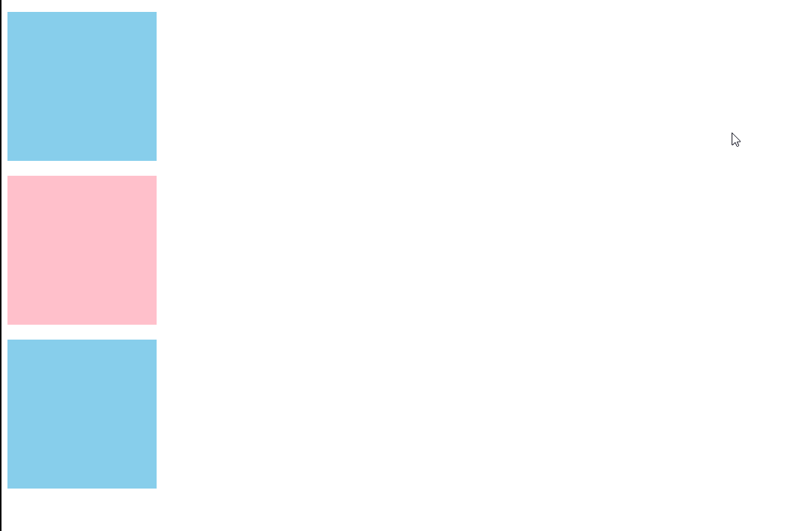

vue介绍
兼容性
Vue 不支持 IE8 及以下版本，因为 Vue 使用了 IE8 无法模拟的 ECMAScript 5 特性。但它支持所有兼容 ECMAScript 5 的浏览器。
- es5很多api也不支持ie8
Object.defineProperty- css3
- ui组件也不支持
- es6
es6
- let / const
`let num = 1 num = 2
const n = 1
+ 箭头函数
//================================= setTimeout(function () { console.log(this) // window }, 1000)
//=============================== var _this = this setTimeout(function () { console.log(_this) }, 1000)
//============================== setTimeout(() => { console.log(this) }, 1000)
+ promise ===> async/await
$('.col1').animate({left: 200}, 2000, function () { $('.col2').animate({left: 300}, 1500, function () { $('.col3').animate({left: 400}, 2000, function () { console.log(34567890) }) }) })
> <img src="./vueinfo/oldAnimate.gif" />
//====================== function ani(el) { return new Promise((resolve, reject) => { $(el).animate({ left: 200 }, 2000, () => { resolve() })
})
}
ani('.col1').then(() => {
return ani('.col2')
}).then(() => {
return ani('.col3')
}).catch(error => {})
`

mvvm
vue是一个渐进式的框架
- 可以与既有的项目进行整合，通过简单地引入script即可
- 也可以以vue为主，进行开发
- 数据驱动 由于是mvvm模式，因而我们在使用时，更多的是考虑数据如何变化，而不是依DOM进行操作，迫不得已时除外
组件分类
- dump组件
- 展示型
- smart 组件
- 接入型 container （服务器交互）
- 交互型 比如各类加强版的表单组件，通常强调复用
- 功能型 比如
<router-view>，<transition>，作为一种扩展、抽象机制存在。
渲染机制
主要用来描述 数据与DOM的关系，这样便于后期维护
变化机制
响应式机制
状态管理
源事件 --> 映射到状态改变 --> UI DOM变化
路由 SPA
路径映射到组件
- web 路由
- 桌面路由 （card）
Virtual DOM
- 用 JavaScript 对象结构表示 DOM 树的结构；然后用这个树构建一个真正的 DOM 树，插到文档当中
- 当状态变更的时候，重新构造一棵新的对象树。然后用新的树和旧的树进行比较，记录两棵树差异
- 把2所记录的差异应用到步骤1所构建的真正的DOM树上，视图就更新了

plugin
vue start
- 模板语法
template=== reactjsx - 基础讲解